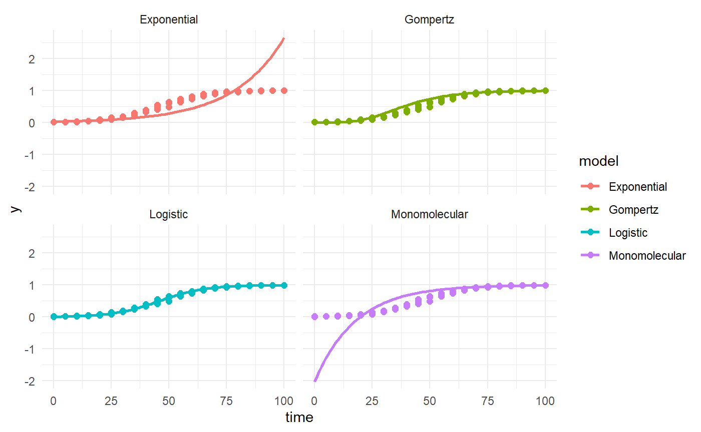
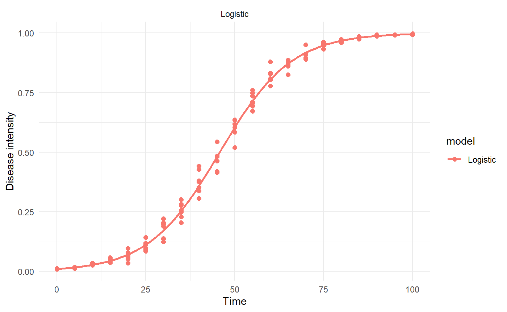
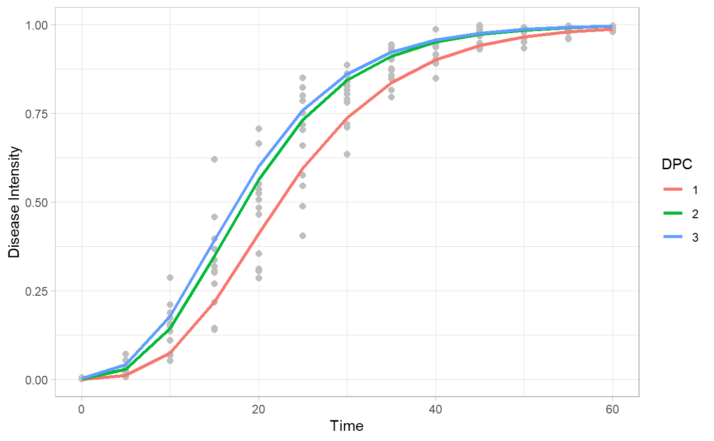

Fitting disease progress curves to classic epidemiological models
Kaique S Alves
2020-09-02
Source:vignettes/fitting.Rmd
fitting.RmdIntroduction
Use epifitter to fit the classic epidemiological models, Exponential, Monomolecular, Logistic, Gompertz, to your disease progress curves.
Hands on
Packages
First we have to load some packages. If you don’t have any of theses, please install it with the function instal.packages().
Data
dpc_data = sim_logistic( N = 100, y0 = 0.01, dt = 5, r = 0.1, alpha = 0.2, n = 7 ) head(dpc_data)
## replicates time y random_y
## 1 1 0 0.01000000 0.01000000
## 2 1 5 0.01638216 0.01946034
## 3 1 10 0.02672677 0.02534123
## 4 1 15 0.04331509 0.04286112
## 5 1 20 0.06946352 0.06451031
## 6 1 25 0.10958806 0.10207789
Using fin_lin()
f_lin = fit_lin(time = dpc_data$time, y = dpc_data$random_y) f_lin
## Results of fitting population models
##
## Stats:
## CCC r_squared RSE
## Logistic 0.9981 0.9961 0.1920
## Gompertz 0.9769 0.9549 0.4785
## Monomolecular 0.9328 0.8740 0.6469
## Exponential 0.9086 0.8325 0.6150
##
## Infection rate:
## Estimate Std.error Lower Upper
## Logistic 0.10088090 0.03056548 0.09984738 0.09984738
## Gompertz 0.07225421 0.07619073 0.06967795 0.06967795
## Monomolecular 0.05589763 0.10300243 0.05241479 0.05241479
## Exponential 0.04498327 0.09792954 0.04167195 0.04167195
##
## Initial inoculum:
## Estimate Lower Upper
## Logistic 9.668806e-03 9.107155e-03 1.026474e-02
## Gompertz 1.388675e-05 2.255217e-06 6.632157e-05
## Monomolecular -2.019196e+00 -2.700880e+00 -1.463075e+00
## Exponential 2.947703e-02 2.428983e-02 3.577199e-02head(f_lin$data)
## time y model linearized predicted residual
## 1 0 0.01000000 Exponential -4.605170 0.02947703 -0.019477030
## 2 5 0.01946034 Exponential -3.939377 0.03691167 -0.017451331
## 3 10 0.02534123 Exponential -3.675323 0.04622145 -0.020880225
## 4 15 0.04286112 Exponential -3.149790 0.05787933 -0.015018206
## 5 20 0.06451031 Exponential -2.740930 0.07247754 -0.007967227
## 6 25 0.10207789 Exponential -2.282019 0.09075767 0.011320220head(f_lin$stats_all)
## # A tibble: 4 x 12
## best_model model r r_se r_ci_lwr r_ci_upr r_squared RSE CCC
## <int> <chr> <dbl> <dbl> <dbl> <dbl> <dbl> <dbl> <dbl>
## 1 1 Logi~ 0.101 0.0306 0.0998 0.102 0.996 0.192 0.998
## 2 2 Gomp~ 0.0723 0.0762 0.0697 0.0748 0.955 0.478 0.977
## 3 3 Mono~ 0.0559 0.103 0.0524 0.0594 0.874 0.647 0.933
## 4 4 Expo~ 0.0450 0.0979 0.0417 0.0483 0.833 0.615 0.909
## # ... with 3 more variables: y0 <dbl>, y0_ci_lwr <dbl>, y0_ci_upr <dbl>plot_fit(f_lin, point_size = 2)+ theme_minimal()

plot_fit(f_lin, point_size = 2, models = "Logistic")+ theme_minimal()

Using fin_nlin()
f_nlin = fit_nlin(time = dpc_data$time, y = dpc_data$random_y) f_nlin
## Results of fitting population models
##
## Stats:
## CCC r_squared RSE
## Logistic 0.9986 0.9972 0.0209
## Gompertz 0.9969 0.9949 0.0309
## Monomolecular 0.9214 0.8770 0.1446
## Exponential 0.8936 0.8341 0.1659
##
## Infection rate:
## Estimate Std.error Lower Upper
## Logistic 0.09614393 0.0011393044 0.09389214 0.09389214
## Gompertz 0.06739086 0.0011458461 0.06512614 0.06512614
## Monomolecular 0.02353256 0.0010559162 0.02144558 0.02144558
## Exponential 0.01951541 0.0009850412 0.01756852 0.01756852
##
## Initial inoculum:
## Estimate Std.error Lower Upper
## Logistic 1.201279e-02 6.404323e-04 1.074700e-02 1.327858e-02
## Gompertz 1.002436e-06 7.068776e-07 -3.946794e-07 2.399551e-06
## Monomolecular -2.376950e-01 3.449668e-02 -3.058763e-01 -1.695137e-01
## Exponential 1.780698e-01 1.429147e-02 1.498233e-01 2.063163e-01
Using fin_nlin2()
f_nlin2 = fit_nlin2(time = dpc_data$time, y = dpc_data$random_y) f_nlin2
## Results of fitting population models
##
## Stats:
## CCC r_squared RSE
## Logistic 0.9986 0.9972 0.0210
## Gompertz 0.9978 0.9960 0.0264
## Monomolecular 0.9731 0.9477 0.0903
##
## Infection rate:
## Estimate Std.error Lower Upper
## Logistic 0.09580804 0.001410535 0.093020010 0.093020010
## Gompertz 0.05968882 0.001286116 0.057146713 0.057146713
## Monomolecular 0.00439521 0.001458650 0.001512079 0.001512079
##
## Initial inoculum:
## Estimate Std.error Lower Upper
## Logistic 1.215868e-02 7.442314e-04 1.068765e-02 1.362971e-02
## Gompertz 2.244514e-05 1.180278e-05 -8.839365e-07 4.577422e-05
## Monomolecular -1.343076e-01 2.117950e-02 -1.761704e-01 -9.244471e-02
##
## Maximum disease intensity:
## Estimate Std.error Lower Upper
## Logistic 1.001599 0.003962775 0.9937663 1.009432
## Gompertz 1.048019 0.007052696 1.0340790 1.061959
## Monomolecular 3.401545 0.948596524 1.5265729 5.276517
Using multi_fitter
Data
epi1 = sim_gompertz(N = 60, y0 = 0.001, dt = 5, r = 0.1, alpha = 0.4, n = 4) epi2 = sim_gompertz(N = 60, y0 = 0.001, dt = 5, r = 0.12, alpha = 0.4, n = 4) epi3 = sim_gompertz(N = 60, y0 = 0.003, dt = 5, r = 0.12, alpha = 0.4, n = 4) multi_epidemic = bind_rows(epi1, epi2, epi3, .id= "DPC") head(multi_epidemic)
## DPC replicates time y random_y
## 1 1 1 0 0.00100000 0.001294728
## 2 1 1 5 0.01515505 0.020871322
## 3 1 1 10 0.07878459 0.067849171
## 4 1 1 15 0.21411521 0.141133323
## 5 1 1 20 0.39266393 0.311283628
## 6 1 1 25 0.56723412 0.545713980multi_fit = multi_fitter(time_col = "time", intensity_col = "random_y", data = multi_epidemic, strata_cols = "DPC") multi_fit$Parameters
## DPC best_model model r r_se r_ci_lwr r_ci_upr
## 1 1 1 Gompertz 0.10732401 0.17188386 0.09755918 0.11708884
## 2 1 2 Logistic 0.16565541 0.28100604 0.14969128 0.18161954
## 3 1 3 Monomolecular 0.07892221 0.18639101 0.06833322 0.08951121
## 4 1 4 Exponential 0.08673320 0.30147651 0.06960613 0.10386027
## 5 2 1 Gompertz 0.12150233 0.08496852 0.11667522 0.12632945
## 6 2 2 Monomolecular 0.09593046 0.11656177 0.08930851 0.10255241
## 7 2 3 Logistic 0.17446167 0.27993081 0.15855863 0.19036472
## 8 2 4 Exponential 0.07853121 0.34620979 0.05886282 0.09819961
## 9 3 1 Gompertz 0.12233734 0.10439777 0.11640643 0.12826824
## 10 3 2 Monomolecular 0.09886149 0.12420854 0.09180512 0.10591785
## 11 3 3 Logistic 0.16614829 0.23089032 0.15303126 0.17926531
## 12 3 4 Exponential 0.06728680 0.27818978 0.05148266 0.08309094
## r_squared RSE CCC y0 y0_ci_lwr y0_ci_upr
## 1 0.9069494 0.6558670 0.9512044 0.0004942488 2.141752e-05 0.004561884
## 2 0.8967796 1.0722507 0.9455812 0.0093445511 5.335671e-03 0.016316037
## 3 0.8175906 0.7112228 0.8996422 -0.9971284094 -1.903996e+00 -0.373459834
## 4 0.6741829 1.1503610 0.8053874 0.0188383040 1.028163e-02 0.034516091
## 5 0.9808136 0.3242192 0.9903139 0.0014668882 4.355968e-04 0.004082972
## 6 0.9442377 0.4447714 0.9713192 -1.0410295847 -1.579448e+00 -0.614997109
## 7 0.9066331 1.0681479 0.9510305 0.0146987712 8.430432e-03 0.025507957
## 8 0.5626142 1.3210524 0.7200935 0.0304481776 1.519009e-02 0.061032650
## 9 0.9716956 0.3983565 0.9856446 0.0028150180 7.152519e-04 0.008549619
## 10 0.9406094 0.4739496 0.9693959 -1.0129351924 -1.583317e+00 -0.568490602
## 11 0.9282925 0.8810213 0.9628130 0.0238082567 1.510687e-02 0.037331569
## 12 0.5939206 1.0615046 0.7452323 0.0490933038 2.807732e-02 0.085839843head(multi_fit$Data)
## DPC time y model linearized predicted residual
## 1 1 0 0.001294728 Exponential -6.6494543 0.01883830 -0.017543575
## 2 1 5 0.020871322 Exponential -3.8693792 0.02906568 -0.008194362
## 3 1 10 0.067849171 Exponential -2.6904681 0.04484554 0.023003628
## 4 1 15 0.141133323 Exponential -1.9580503 0.06919234 0.071940981
## 5 1 20 0.311283628 Exponential -1.1670508 0.10675710 0.204526525
## 6 1 25 0.545713980 Exponential -0.6056603 0.16471590 0.380998080Estimate K?
multi_fit_K = multi_fitter(time_col = "time", intensity_col = "random_y", data = multi_epidemic, strata_cols = "DPC", nlin = T, estimate_K =T)
## Warning in log(y0/K): NaNs produzidos
## Warning in log(y0/K): NaNs produzidos
## Warning in log(y0/K): NaNs produzidos
## Warning in log(y0/K): NaNs produzidos
## Warning in log(y0/K): NaNs produzidos
## Warning in log(y0/K): NaNs produzidos
## Warning in log(y0/K): NaNs produzidos
## Warning in log(y0/K): NaNs produzidoshead(multi_fit_K$Parameters)
## DPC model y0 y0_se r r_se K
## 1 1 Logistic 0.0164800310 0.0031393878 0.16772591 0.008209369 0.9763211
## 2 1 Gompertz 0.0001946452 0.0002126594 0.10455877 0.006228360 1.0121825
## 3 1 Monomolecular -0.1238695394 0.0369826983 0.01744862 0.004405027 1.7296906
## 4 2 Gompertz 0.0022136659 0.0012433734 0.11992305 0.005653455 0.9962531
## 5 2 Logistic 0.0309516044 0.0054031230 0.18459862 0.009743484 0.9735195
## 6 2 Monomolecular -0.1194479739 0.0335829483 0.03605175 0.004228962 1.2155953
## K_se df CCC r_squared RSE y0_ci_lwr y0_ci_upr
## 1 0.01113618 49 0.9946400 0.9894909 0.04081798 0.0101711951 0.0227888669
## 2 0.01627876 49 0.9936668 0.9874358 0.04473677 -0.0002327099 0.0006220003
## 3 0.28922900 49 0.9701916 0.9421089 0.09545314 -0.1981890542 -0.0495500247
## 4 0.01016884 49 0.9952328 0.9905419 0.03726119 -0.0002849865 0.0047123184
## 5 0.00996107 49 0.9932739 0.9875739 0.04379123 0.0200936222 0.0418095866
## 6 0.06410616 49 0.9770408 0.9551121 0.08114021 -0.1869354351 -0.0519605127
## r_ci_lwr r_ci_upr K_ci_lwr K_ci_upr best_model
## 1 0.151228561 0.18422325 0.9539421 0.9987001 1
## 2 0.092042414 0.11707513 0.9794691 1.0448959 2
## 3 0.008596389 0.02630086 1.1484632 2.3109181 3
## 4 0.108562009 0.13128410 0.9758180 1.0166881 1
## 5 0.165018352 0.20417888 0.9535019 0.9935370 2
## 6 0.027553335 0.04455017 1.0867692 1.3444215 3Make graphics to compare curves and parameters
Curves
multi_fit$Data %>% ggplot(aes(time, predicted, color = DPC))+ geom_point(aes(time,y), color = "gray")+ geom_line()+ facet_wrap(~model, scales = "free_y")+ theme_light()

multi_fit$Data %>% filter(model == "Gompertz") %>% ggplot(aes(time, predicted, color = DPC))+ geom_point(aes(time,y), color = "gray", size =2)+ geom_line(size = 1.2)+ theme_light()+ labs(x = "Time", y = "Disease Intensity")

Apparent infection rate
multi_fit$Parameters %>% filter(model == "Gompertz") %>% ggplot(aes(DPC,r))+ geom_point(size = 3)+ geom_errorbar(aes(ymin = r_ci_lwr, ymax = r_ci_upr), width = 0, size=1)+ labs(x = "Time", y = "Apparent infection rate")+ theme_light()